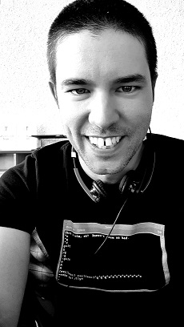

| Some things I do: | Bruce is... | What's with this site? |
|
-Youtube.com/HACKANDRIDEBIKES -Strava.com -500px.com/BruceChastain -Instagram.com/bruce_chastain -Instagram.com/hack_and_ride_bikes/ -Linkedin.com/in/alfredchastain -Twitter.com/bruce_chastain -Github.com/BruceChastain -My HACK AND RIDE BIKES email list! |
- Father, husband, son, brother - All around tech nerd - Photographer/videographer/creator/maker - Immigrant - Volunteer - Cyclist |
I choose this design because I was around on these internets in the mid 90s when this is how a lot of websites actually looked! And I love it! It's simplicity makes maintenance very easy and the load times are practically nothing! The layout is from Bryan Lunduke, thanks man. |
| Contact: | That's me: | Volodalen: |
|
Need to get ahold of me? I've got email! E-Mail: Bruce.Chastain@protonmail.ch |
 |
Volodalen? What's that mean? Volodalen a small charity supporting the village of Tohoue in the country of Benin. I've been very fortunate to be able to be part of it, check out our website:
Volodalen-swiss.com |